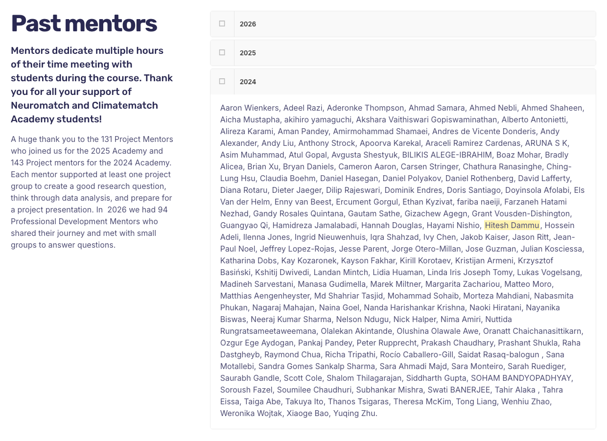

ESF: harmonizing heterogeneous EEG acquisition for pretrained classifiers preprint v2, September 2026
Question: when every recording first passes through one fixed preprocessing contract, which recorder differences stop mattering to a frozen pretrained EEG classifier, for which model, and at what cost? Five differences simulated on raw TUAB recordings; three frozen public models (EEGPT, LaBraM, BIOT).


- Probes trained on the TUAB train split only; patient-disjoint evaluation; three seeds plus a linear probe per model; DeLong tests with FDR control; permuted-label and outlyingness controls.
- Version 1 was submitted to IEEE SPMB 2026 and withdrawn by me after I found an implementation error (operators applied downstream of the contract; probe overlapping the evaluation set). Version 2 reruns everything; the version note records the correction.
Evidence. Code, twelve probes and every per-recording prediction are public; tables and figures regenerate on a CPU.
Persistent activity and memory load in human single neurons during a Sternberg task
Question: do medial temporal and medial frontal neurons fire persistently while items are held in working memory, and does that firing scale with the number of items? The laboratory's published selectivity tests re-implemented in Python, plus a load analysis.


- 119 concept cells (13%) and 273 maintenance cells (30%), consistent with Kamiński et al. 2017.
- 8% of maintenance cells increase with load, 10% decrease; load 3 versus load 1, Wilcoxon p = 0.67. Firing rate alone does not carry load.
Evidence. Scripts, per-unit results and figures: github.com/h5371h/sternberg-wm-000469. Only trial tables and spike times were read from the archive.
Memory-selective and visually selective neurons in the human medial temporal lobe
Hippocampal and amygdala units from 59 epilepsy patients in an old/new recognition task, 89 sessions in NWB. Per-unit rasters and PSTHs; visual selectivity by one-way ANOVA across image categories; memory selectivity by bootstrap on new versus old trials.


Neuropixels recordings from human cortex under anaesthesia
Array electrophysiology analysis: spike sorting, movement-locked firing, LFP tuning


Pilot with Barrow Neurological Institute (2023, unpublished)

Question: does 1–4 Hz activity in temporal cortex track speech at syllabic timescales? Reconstructed and time-aligned the raw recording, computed multitaper spectra with Chronux, aligned phoneme boundaries from transcripts to delta-band peaks. No paper resulted.
Clinical EEG signal pipeline (January 2025 – present)
- Readers for Natus, Cadwell, Nihon Kohden, Persyst, Nicolet, BrainVision and EDF/BDF exports into one canonical representation (19-channel 10–20, 250 Hz, average reference, channel-wise robust z-score).
- On-site acquisition, montage and electrode checks, and session QC with staff at three partner clinics on legacy recorders. Each clinic's retrospective archive: weakly labelled, over 400 GB, vendor-locked.
- Seven Temple University Hospital EEG subcorpora, 84,552 recordings, converted to the same representation.
- Interictal discharge detector on frozen EEGPT features: held-out AUC 0.929, n = 476 (internal validation). Normal/abnormal triage model. Evaluation running on the clinics' retrospective and prospective recordings.
No patient data appear on this site. Model numbers are engineering metrics, not clinical claims.
Publications and manuscripts
Dammu H. ESF: Harmonizing heterogeneous EEG acquisition for pretrained classifiers. Preprint v2, September 2026. doi:10.5281/zenodo.22772008. Code: github.com/h5371h/esf-recoverability. Version 1 submitted to IEEE SPMB 2026 and withdrawn by the author; see the version note.
Chary Nalband S, Pamidimukkala K, Akkapally P, Challa M, Kirupakaran Y, Dammu H, Thati A, Abraham S, Gunda R. Evaluation of surface roughness and cutting temperature of EN31 steel with varying MQSL parameters. IOP Conf. Ser.: Mater. Sci. Eng. 895, 012003 (2020). doi:10.1088/1757-899x/895/1/012003. Undergraduate co-author.
Certificates, 2020–2024
- Probabilistic Graphical Models Specialization, Stanford Online, 24 March 2020. Verify
- Professional Certificate in IBM Deep Learning, IBM via edX, March 2020. Verify
- AI for Medicine Specialization, DeepLearning.AI, 4 May 2021. Verify
- Deep Learning Specialization, DeepLearning.AI, 13 May 2021. Verify
- IBM AI Engineering Professional Certificate, IBM via Coursera. Badge
- Machine Learning, Stanford Online. Verify
- BCI and Neurotechnology Spring School, g.tec, 2022. Certificate
- Allen Institute Neural Dynamics Data Exploration, ASU, 2024.
Education, training and mentoring
MS Biomedical Engineering, Arizona State University, 2022–2023. Neural Engineering (A), Data Analysis in Neuroscience (A), Mathematical Neuroscience (A), Magnetic Resonance Imaging (A−), Low-Power Bioelectronics (A+). Applied project in murine benchtop electrophysiology (A).
Bachelor of Technology, Jawaharlal Nehru Technological University, Hyderabad, 2021. US bachelor's equivalency verified by World Education Services: badges.wes.org.
Ethics and protocol training. CITI human-subjects research; IACUC for rodent and non-human primate protocols.
Mentoring. Project mentor, Neuromatch Academy (NeuroAI), 2024. Trained in SCORE EEG reporting through the Holberg EEG SCORE educational platform.
{kind=link}
